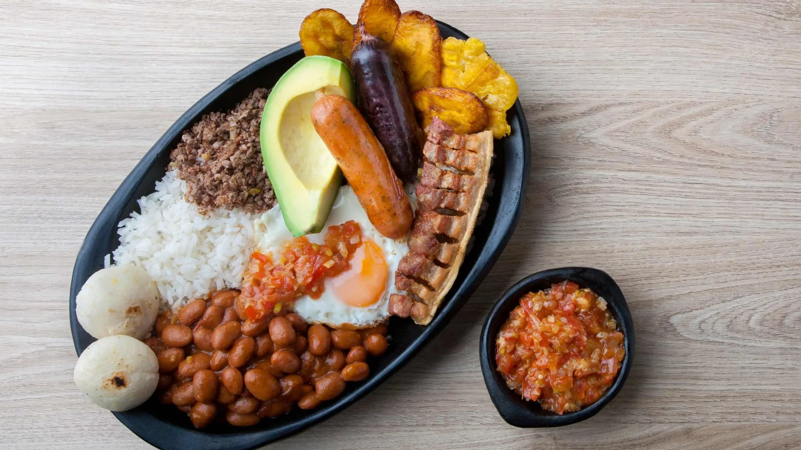

CONCEPCIÓN

Que hacer?
- Conocer el parque principal y sus casitas de colores
- Visitar la iglesia principal
- Ir a la casa de la cultura Jose Maria Cordoba
- Subir al alto de la virgen
- Tomar un chapuzon en sus charcos y cascadas
Te dejamos este video donde puedes ver un poco de lo que sera tu visita a la Concha
Donde comer?
En concepcion podras encontrar comida tipica en cada esquina por lo que en esta ocasión queremos recomendarte los mejores cafés del pueblo
@cafe.josemaria
En este encantador lugar podrás vivir lo que es una verdadera experiencia cafetera. Encontrarás todo el proceso del café, Historia, preparación de métodos y las más deliciosas bebidas a base de café. Ah y no te olvides de preguntar por los !Churros!
@aveli_cafe
¡Este nuevo lugar para deleitar el paladar es simplemente genial! Entren a probar su café de origen, sus pasteles deliciosos, sus crepes especiales. Diana y Vanessa tendrán siempre una sonrisa para brindarles los mejores cafés y atenderlos de la manera más cordial.
sabeartesanal
Posiblemente la mejor panaderia de Concepción sin duda alguna aún si en realidad ofrecen mucho más y puedes comer unas pizzas divinas o deleitarte con su rica variedad de cafés o cervezas artesanales. Uno de mis lugares preferido cada vez que visito el casco urbano, ¡no te lo pierda!
Donde hospedarse
Te recomendamos que busques tu hospedaje antes de llegar ya que a veces se puede llenar mucho, tiene hoteles para todos los presupuestos, en Booking podras encontrarlos con descuentos y te ayudaran con el proceso de reserva, visita su pagina aqui:
Booking.comvista desde el alto de la virgen